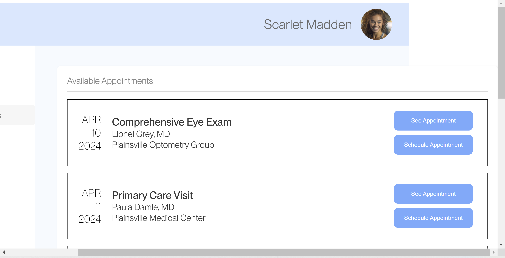

A/B Testing Project
This project is about doing A/B testing on two websites, A as a baseline and B with attempted improvements. We are trying to see if our modifications to B website improved usability. A/B testing is useful because it will give us data that will drive observations about which website was easier to navigate, through metrics like clicks and time spent. This will give alternative observations to just looking at a website and judging qualitatively which is better.
Baseline website A:
Modified website B:

Hypotheses:
-
Misclick rate:
Null Hypothesis: The misclick rate will be higher for the B site than the A site
Alternative Hypothesis: The misclick rate will be higher for the A site than the B site.
Reasoning: The alternative hypothesis is higher misclick rate for the A site than the B site because we are assuming the A site is harder to navigate and causes more misclicks than the modified B site.
-
Time on page:
Null Hypothesis: The time on page is higher for the B site than the A site.
Alternative Hypothesis: The time on page is higher for the A site than the B site.
Reasoning: The alternative hypothesis is more time on page for the A site than B site because we are assuming the A site will be harder to scan and require more time on page than the modified B site.
-
Mouse move distance:
Null Hypothesis: The mouse move distance is higher for the B site than the A site.
Alternative Hypothesis: The mouse move distance is higher for the A site than the B site.
Reasoning: The alternative hypothesis is more mouse move distance for the A site because we are guessing the A site is more confusing and requires more mouse moving to find elements, as opposed to the modified B site.
Tests:
-
Misclick rate:
For the misclick rate, I chose to use the chi-squared test, because the data for whether someone misclicked or not is categorical in that it is just a true or false value. This makes it less suited to two tail or one tail which favors continuous data.
The p-value is 0.0015, which is well under the 0.05 significance level we can set. Therefore, we can be confident we have a statistically significant result.
However, the chi-squared doesn't have directionality, so we need to observe the data to see that the count of misclicks is much higher in the A sample. Therefore, we know that the statistically significant result is about A having more misclicks than B. So, we can take our high confidence result to reject the null hypothesis, and accept the alternative hypothesis.
In addition, we have a high chi-squared test statistic value of 10.09, which explains our very low p-value. Overall, it is likely that there are less misclicks with the design of B as opposed to A.
-
Time on page:
For the time on the page, I chose to use the one tail test, since I am trying to find a unidirectional relationship where the data for A more or less than for B.
The p-value is 0.0007, which suggests a very statistically significant result. So, we can be reasonably confident in rejecting the null hypothesis and accepting the alternative hypothesis that the time spent on the site is higher for A than B.
However, the degrees of freedom is not the highest at 16.6, so we can't assume our sample data is normally distributed. This may weaken our results, but it also may not. Therefore, given the high T-score of 4.93 and the corresponding low p-value, we can still be confident in rejecting the null hypothesis and accepting the alternative hypothesis.
Therefore, it is likely our design of the B site reduced the time spent on the page, hinting at higher efficiency.
-
Mouse move distance:
For the mouse move distance, I chose the one tail test because it is continous data and I'm looking for a unidirectional relationship between site A and B's mouse move distance where either A or B will have more distance than each other.
The p-value was 0.0056 and the t-score is 2.87, but the degrees of freedom was only 15.6. So, the p-value is low such that we can be confident that there is a statistically significant result, but we'd like to see a higher degrees of freedom to further confirm our confidence.
Therefore, we can be relatively confident to reject the null hypothesis and accept the alternative hypothesis that B has less mouse move distance than A. Therefore, it is likely that B has a better design that requires users to move the mouse less.
Summary Stats:
For the summary statistics, we see that variance for the T-tests was pretty high. For example 150838997.5 and 14077278.84 for A and B of time on page compared to avg values of 25865.4 and 9528.533333 for the two sites. The mouse move distance also had a similar variance relationship: avg(A) was 6373.063439, avg(B) was 3268.046467, A variance was 16548291.14, and B variance was 973422.0868. High variance within A or B is not good for our confidence, since unexplained variance means more of the effect could be random rather than from the differences in the websites. Additionally, like we said before, degrees of freedom is lower than ideal, where more than 30 degrees is ideal by the central limit theorem to prove our sample data is normally distributed.
Nonetheless, we see a huge difference in the averages, more than double from A to B in both the T-tests. This is reflected in the low p-values and counteracts the lack of confidence instilled by the variance and degrees of freedom.
Likewise, the chi-squred also had low degrees of freedom of 1 but a huge test-statistic value of 10.1 and low p-value, so we can still assume it's statistically significant.
This certainly makes sense given the biased nature of our experiment, where we didn't do true A/B testing because everyone in our lab session did both the A and B tests.